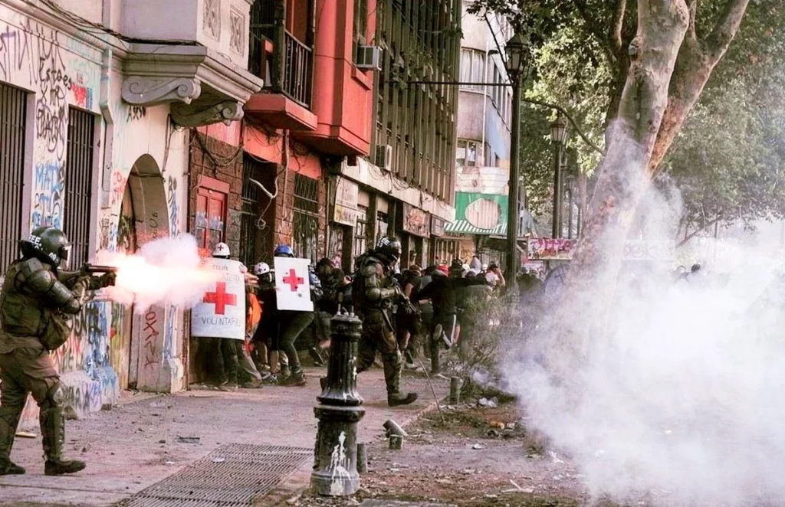
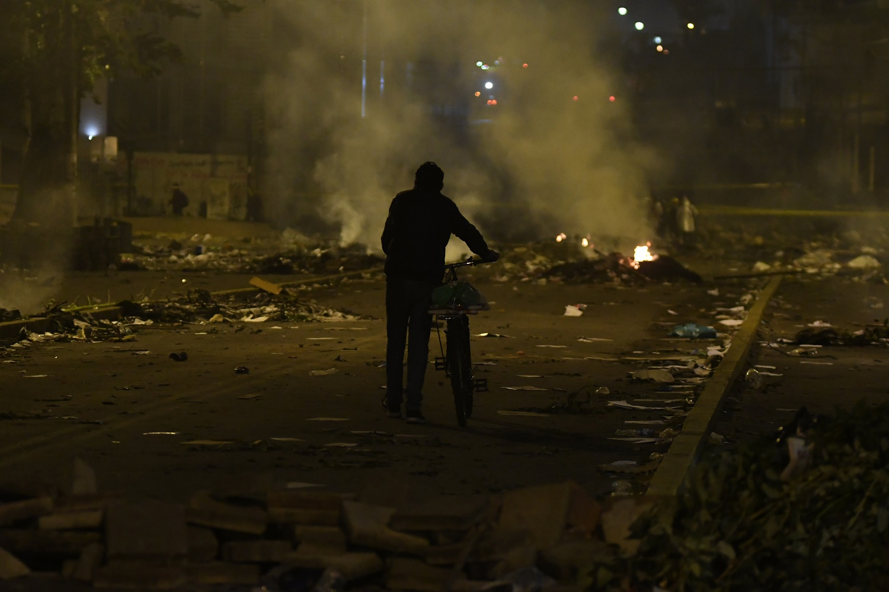

Usa las flechas, la rueda del mouse o desliza para pasar la página
Villa Grimaldi · Museo de la Memoria
El nuevo enemigo interno
Memoria, miedo y poder punitivo en Chile y Ecuador
Curso Trabajo de Campo y Actualidad · Magíster en Ciencias Sociales, mención Sociología de la Modernización · Universidad de Chile
Autores
Paccha Adriana Lazcano Andrés
Sitios de memoria Parque por la Paz · MMDH
Índice
Un recorrido en seis movimientos
El poder punitivo es la capacidad del Estado de perseguir, sancionar, privar de libertad y ejercer coerción sobre las personas — legítima solo cuando el derecho, el control institucional y las garantías de los DD.HH. la limitan. Este recorrido examina cómo se construyen las amenazas que vuelven aceptable su expansión, y qué papel juega la memoria en advertirlo.
I
Sitios de memoria
Villa Grimaldi y el Museo de la Memoria: de dónde viene el «enemigo interno».
II
El giro discursivo
De la Doctrina de Seguridad Nacional al miedo administrado.
III
Las cifras del encierro
El costo material de esa expansión: +49,6 % de personas privadas de libertad en tres años.
IV
El sujeto peligroso
Quién carga con la sospecha cuando la seguridad traza una frontera moral.
V
Espejo regional
Ecuador: la misma lógica, otra escala.
VI
Cronología
1973—2026, Chile y Ecuador en una sola línea de tiempo.
Índice02
Audio · cadena nacional 2019
Fig. 01 — Palacio de La Moneda, sede del gobierno de Chile
Apertura
«Estamos en guerra contra un enemigo poderoso, implacable.»
Sebastián Piñera · Presidente de Chile, 20.10.2019
La frase no describe un hecho: lo instituye — reordena de inmediato quién merece protección y quién puede ser tratado como amenaza. Pregunta que recorre esta propuesta: ¿de qué manera los discursos del miedo justifican la expansión del poder punitivo del Estado?
Aunque el contexto institucional actual es profundamente distinto al de la dictadura, persisten continuidades en los mecanismos discursivos que construyen amenazas para justificar mayor control estatal — en Chile y, con otra intensidad, en Ecuador.

05
Carabineros, estallido 2019

06
Después, de noche
05
Estallido, detalle
06
Calle, escombros
05
Carabineros, estallido 2019
06
Después, de noche
05
Estallido, detalle
06
Calle, escombros
El nuevo enemigo interno03
Fotografías de prensa: fuente no identificada
Ambiente · sitio de memoria
Cada fotografía devuelve un nombre.
Villa Grimaldi · retratos dispuestos en el pasto04
01
Casa CORVI, reconstrucción
02
MMDH, fachada
01
Casa CORVI, interior
02
MMDH, entrada
01
Casa CORVI, reconstrucción
02
MMDH, fachada
01
Casa CORVI, interior
02
MMDH, entrada
Audio · testimonio en sitio
I · Sitios de memoria
Villa Grimaldi y el Museo de la Memoria
La memoria colectiva no es un depósito estático: se reconstruye desde marcos sociales compartidos (Halbwachs, 2004). En Villa Grimaldi, las Casas CORVI —un metro cuadrado para cuatro o cinco personas—, La Torre y las «conejeras» documentan un disciplinamiento que buscaba despojar a los detenidos de su condición de sujetos de derecho (Corp. Parque por la Paz Villa Grimaldi, 2017).
Los espacios vacíos del muro no cierran una historia: mantienen abierta la pregunta por verdad, justicia y reparación.
05
MMDH, arquitectura
06
Muro de retratos
05
MMDH, fachada verde
06
Retratos, detalle
05
MMDH, arquitectura
06
Muro de retratos
05
MMDH, fachada verde
06
Retratos, detalle
Fuentes: Halbwachs, 2004 · Corp. Parque por la Paz Villa Grimaldi, 201705
Entonces · fotografía y plano de archivo
Ahora · 202606
Sin voces, solo ambiente
La Torre
01
MMDH, arquitectura
02
Palacio de La Moneda
03
Villa Grimaldi, archivo
02
La Moneda, fachada
01
MMDH, arquitectura
02
Palacio de La Moneda
03
Villa Grimaldi, archivo
02
La Moneda, fachada
Audio · sesión del Senado
II · El giro discursivo
De la Doctrina de Seguridad Nacional al miedo administrado
Bajo la Doctrina de Seguridad Nacional, la defensa del orden justificó la restricción de derechos y la ampliación de las facultades coercitivas del Estado (Zaffaroni, 2007). El «enemigo interno» ya no es solo político: hoy se le asocia con la delincuencia, el narcotráfico o la migración irregular (Navarrete Yáñez, 2019).
Nota— la Doctrina de Seguridad Nacional definió al «enemigo interno» como amenaza subversiva a neutralizar, aun a costa de los derechos fundamentales (Benavent Escuin, 1990).
«La migración ilegal debía ser constitutiva de delito», sostuvo el senador Rodrigo Galilea, apelando al uso de los medios de fuerza legítima del Estado.
Senado de la República de Chile, 18 de julio de 2024
El discurso de la seguridad traza una frontera moral entre el «ciudadano de bien» y quienes deben demostrar que no son una amenaza (Luna Báez y Simelio, 2024): la sospecha se proyecta anticipadamente sobre ciertos territorios, antes de toda comprobación individual — como ya ensayaba, en otra escala, el encierro en un metro cuadrado.
Recibe protección
El ciudadano de bien
Debe demostrar que no lo es
El sujeto peligroso
La seguridad de unos puede construirse sobre la vigilancia y la exposición de otros a la violencia institucional.
Fuente: Luna Báez y Simelio, 2024 · Foto: prensa, s/d09
01
Fuerzas Armadas, Ecuador
02
Crisis carcelaria, 2024
01
FF.AA., despliegue
02
Recinto penitenciario
01
Fuerzas Armadas, Ecuador
02
Crisis carcelaria, 2024
01
FF.AA., despliegue
02
Recinto penitenciario
Audio · Noboa + Las Malvinas
V · Espejo regional
Ecuador: cuando la urgencia se vuelve doctrina
“We are at war.”
Daniel Noboa · Presidente del Ecuador, 14.05.2026
Enero 2024: el Decreto N.º 111 reconoció un conflicto armado interno y amplió a las Fuerzas Armadas frente a organizaciones calificadas como terroristas, difuminando la frontera entre defensa nacional y seguridad interna.
Diciembre 2024, Guayaquil: cuatro niños afrodescendientes fueron interceptados por una patrulla militar; sus cuerpos aparecieron en Taura. En 2026 la Corte Constitucional determinó que la privación de libertad fue ilegal, arbitraria e ilegítima; la CIDH advirtió sobre perfilamiento racial.